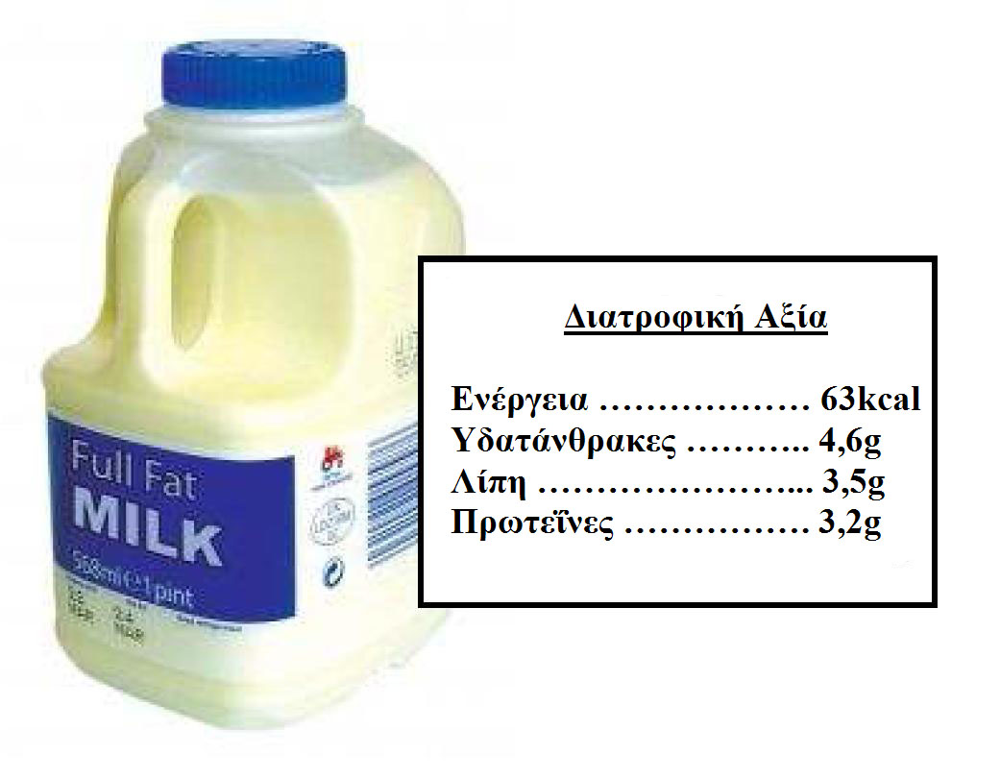

Ετικέτες Θρεπτικών Συστατικών
Οι περισσότερες συσκευασίες τροφίμων διαθέτουν ετικέτα με πληροφορίες για τα θρεπτικά τους συστατικά. Οι ετικέτες συνήθως περιλαμβάνουν έναν πίνακα με τις βασικές κατηγορίες θρεπτικών ουσιών (υδατάνθρακες, πρωτεΐνες και λιπαρά) και την ποσότητά τους. Συνήθως αυτές οι τιμές δίνονται ανά 100 (g ή ml) ή/και ανά μερίδα.
Οι θρεπτικές ουσίες των τροφών – υδατάνθρακες, λιπαρά και πρωτεΐνες - παρέχουν στο ανθρώπινο σώμα την ενέργεια που χρειάζεται για να διατηρήσει τις ζωτικές του λειτουργίες (ρύθμιση του κτύπου της καρδίας, αναπνοή, πέψη, κ.λπ.) καθώς επίσης και την ενέργεια που χρειάζεται καθ’ όλη τη διάρκεια της μέρας (κίνηση, άσκηση, κ.λπ.). Τα λιπαρά περιέχουν τουλάχιστον διπλάσια ενέργεια (θερμίδες) σε σύγκριση με τους υδατάνθρακες ή τις πρωτεΐνες ίδιας ποσότητας (πίνακας πιο κάτω). Η ενέργεια μετριέται σε χιλιοθερμίδες (Kcal) ή χιλιοτζάουλς (KJ). Μια χιλιοθερμίδα (Kcal) είναι ίση με 1 διατροφική θερμίδα ή 4.2KJ. Δηλαδή, 1KJ ισοδυναμεί με 1,000 τζάουλς ή 0.24 θερμίδες.
Θρεπτικά Συστατικά |
Ενέργεια ανά 1g |
|
Kcal/g |
KJ/g |
|
Υδατάνθρακες |
4 |
16.75 |
Λιπαρά |
9 |
37.68 |
Πρωτεΐνες |
4 |
16.75 |
Αν τα θρεπτικά συστατικά μιας τροφής (πχ. υδατάνθρακες, λιπαρά, πρωτεΐνες) είναι γνωστά, τότε η ενέργεια (θερμίδες) του προϊόντος μπορεί να υπολογιστεί. Αυτό είναι αντίστοιχο της συνολικής ενέργειας των υδατανθράκων, των λιπαρών και των πρωτεϊνών που περιέχονται σε κάποιο προϊόν. Πιο κάτω, παρέχεται ένα παράδειγμα για 100ml γάλακτος:

Χρησιμοποιώντας τις πληροφορίες από την ετικέτα θρεπτικών συστατικών (υδατάνθρακες, λιπαρά, πρωτεΐνες) μπορούμε να κάνουμε τους ακόλουθους υπολογισμούς:
Αν προσθέσουμε όλες τις θερμίδες πιο πάνω, αθροίζεται η συνολική ποσότητα ενέργειας ανά 100ml όπως φαίνεται στην ετικέτα των συστατικών:
18.4 + 31.5 + 12.8 = 62.7 Kcal
Τώρα κάντε τους υπολογισμούς για τα έξι τρόφιμα που σας δίνονται.